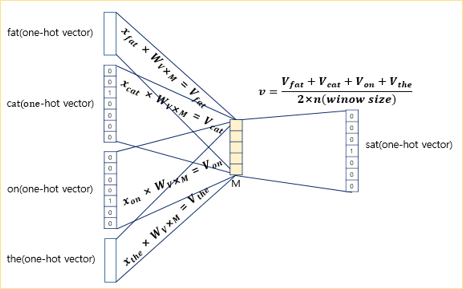

Word Embedding - Word2vec: CBOW, Skip-gram and SGNS
natural language processing
word embedding
word2vec
Author
Cheonghyo Cho
워드 임베딩(Word Embedding)은 자연어 처리(NLP)에서 단어를 고정된 크기의 실수 벡터로 변환하는 기술이다. 이러한 벡터는 단어의 의미를 수치적으로 표현하며, 비슷한 의미를 가진 단어들은 유사한 벡터로 표현된다. 이 중 가장 대표적인 방법인 Word2Vec에 대해 알아보자.
희소 표현(sparse representation) vs 밀집 표현(dense representation)
단어를 밀집 벡터(dense vector)의 형태로 표현하는 방법을 워드 임베딩(word embedding)이라고 함
from sklearn.feature_extraction.text import CountVectorizer# 예제 문서documents = ["I love programming.","I love coding.","Programming is fun."]# CountVectorizer를 사용하여 BoW 생성vectorizer = CountVectorizer()X = vectorizer.fit_transform(documents)# BoW 결과 출력print("BoW:")print(X.toarray())print("Vocabulary:")print(vectorizer.vocabulary_)
분산 표현(Distributed Represetation) - 희소 표현은 단어 벡터간 유사성 표현 불가 → 의미를 다차원 공간에 벡터화 - ‘분포 가설’ 가정 (‘비슷한 문맥에서 등장하는 단어들은 비슷한 의미를 가진다’) - 저차원에 단어의 의미를 여러 차원에다가 분산하여 표현 - 단어 벡터 간 유의미한 유사도 계산 가능
분산 표현의 대표적인 학습 방법인 Word2Vec(2013) 부터 알아보자.
Word2Vec의 학습 방식에는 CBOW(Continuous Bag of Words)와 Skip-Gram 두 가지 방식이 있음
CBOW(Continuous Bag of Words)
주변에 있는 단어들을 입력으로 중간에 있는 단어들을 예측하는 방법
아래 예는 윈도우(window) 크기가 2 인 경우
슬라이딩 윈도우(sliding window): 윈도우 크기가 정해지면 윈도우를 옆으로 움직여서 주변 단어와 중심 단어의 선택을 변경해가며 학습을 위한 데이터 셋을 만듦
입력층(Input layer)의 입력으로서 앞, 뒤로 사용자가 정한 윈도우 크기 범위 안에 있는 주변 단어들의 원-핫 벡터가 들어감
출력층(Output layer)에서 예측하고자 하는 중간 단어의 원-핫 벡터가 레이블로서 필요
Word2Vec은 은닉층이 다수인 딥러닝 모델이 아니라 은닉층이 1개인 ‘shallow neural network’
Word2Vec의 은닉층은 활성화 함수가 존재하지 않으며, 룩업 테이블이라는 연산은 담당, 투사층(projection layer)이라고 부름
CBOW에서 투사층의 크기(\(M\))는 임베딩하고 난 벡터의 차원이 됨. - 그림에서 \(M=5\), CBOW를 수행하고나서 얻는 각 단어의 임베딩 벡터의 차원은 5가 됨.
입력층과 투사층 사이의 가중치(\(W\))는 \(V × M\) 행렬이며, 투사층에서 출력층 사이의 가중치(\(W'\))는 \(M \times V\) 행렬임(여기서 \(V\)는 단어 집합 크기) - 그림에서 \(V=7\), \(W\)는 \(7 × 5\) 행렬, \(W'\)는 \(5 × 7\) 행렬
인공 신경망 훈련 전에 가중치 행렬 \(W\)와 \(W'\)는 랜덤 값 - CBOW는 주변 단어로 중심 단어를 더 정확히 맞추기 위해 계속해서 이 \(W\)와 \(W'\)를 학습해가는 구조
입력 벡터 \(x\)와 가중치 \(W\) 행렬의 곱은 사실 \(W\)행렬의 \(i\)번째 행을 그대로 읽어오는 것과(lookup) 동일
lookup해온 W의 각 행벡터가 Word2Vec 학습 후에는 각 단어의 M차원의 임베딩 벡터로 간주됨 = \(V_i\) (단어집합 크기 \(V\)와 다름!)

주변 단어의 원-핫 벡터(\(x\))에 대해 가중치 \(W\)가 곱해서 생겨진 ‘결과 벡터들’(\(V_i\))은 투사층에서 만나 평균인 벡터를 구하게 됨
투사층에서 벡터의 평균을 구하는 부분은 CBOW가 Skip-Gram과 다른 차이점이기도함
구해진 평균 벡터(\(v\))는 두번째 가중치 행렬 \(W'\)와 곱해지며, 곱셈의 결과(\(z\))로는 원-핫 벡터들과 차원이 \(V\)로 동일한 벡터가 나옴
이 벡터(z)에 CBOW는 소프트맥스(softmax) 함수를 지나고, 벡터의 각 원소들의 값은 0과 1사이의 실수를 가짐(총 합 1)
이는 다중 클래스 분류 문제를 위한 일종의 스코어 벡터(score vector)
스코어 벡터(𝒚 ̂)의 j번째 인덱스가 가진 값은 j번째 단어가 중심 단어일 확률임
이 스코어 벡터의 값은 레이블(y)에 해당하는 벡터인 중심 단어 원-핫 벡터의 값에 가까워져야 함
이 두 벡터값 \((y, \hat{y})\)의 오차를 줄이기위해 CBOW는 손실 함수(loss function)로 크로스 엔트로피(cross-entropy) 함수 사용
학습이 다 되었다면 \(M\)차원의 크기를 갖는 \(W\)의 행렬의 행을 각 단어의 임베딩 벡터로 사용하거나 \(W\)와 \(W'\) 행렬 두 가지 모두를 가지고 임베딩 벡터를 사용하기도 함.
from gensim.models import Word2Vecfrom nltk.tokenize import word_tokenize# 예제 문서documents = ["The quick brown fox jumps over the lazy dog.","I love natural language processing and machine learning.","Word embeddings are a type of word representation that allows words to be represented as vectors.","Gensim is a useful library for text processing in Python.","Machine learning models can be used for a variety of tasks, including classification and regression.","Deep learning is a subset of machine learning that uses neural networks.","Text data requires preprocessing before it can be used in machine learning models.","Natural language processing involves the interaction between computers and humans using natural language.","The field of artificial intelligence includes machine learning and deep learning.","Python is a popular programming language for data science and machine learning."]# 토큰화tokenized_docs = [word_tokenize(doc.lower()) for doc in documents]# Word2Vec 모델 초기화 및 학습 (CBOW)model = Word2Vec(sentences=tokenized_docs, vector_size=5, window=2, sg=0, min_count=1)# "machine" 단어의 벡터 출력print("Vector for 'machine':")print(model.wv['machine'])
Vector for 'machine':
[ 0.1478254 -0.03021165 -0.09053031 0.13081697 -0.09672265]
Skip-gram
중심에 있는 단어를 입력으로 주변에 있는 단어들을 예측하는 방법
나머지 방식은 CBOW와 동일
보통, 한 단어에 대해 여러 학습 기회를 가지는 Skip-gram의 성능이 더 좋다고 함
# Word2Vec 모델 초기화 및 학습 (Skip-Gram)model = Word2Vec(sentences=tokenized_docs, vector_size=5, window=2, sg=1, min_count=1)# "machine" 단어의 벡터 출력print("Vector for 'machine':")print(model.wv['machine'])
Vector for 'machine':
[ 0.14802615 -0.03004972 -0.08976299 0.13072683 -0.0961291 ]
네거티브 샘플링
만약 단어 집합의 크기가 수만 이상에 달한다면 Word2Vec은 학습하기에 무거운 모델이 됨. - Word2Vec은 역전파 과정에서 모든 단어의 임베딩 벡터값의 업데이트를 수행 - 현재 집중하고 있는 중심 단어와 주변 단어가 ‘강아지’와 ’고양이’, ’귀여운’과 같은 단어라면, 사실 이 단어들과 별 연관 관계가 없는 ’돈가스’나 ’컴퓨터’와 같은 수많은 단어의 임베딩 벡터값까지 업데이트하는 것은 비효율적임
네거티브 샘플링(negative sampling)은 Word2Vec이 학습 과정에서 전체 단어 집합이 아니라 일부 단어 집합에만 집중할 수 있도록 하는 방법 - 하나의 중심 단어에 대해서 전체 단어 집합보다 훨씬 작은 단어 집합을 만들어 놓고 마지막 단계를 이진 분류 문제로 변환 - 주변 단어들을 긍정(positive), 랜덤으로 샘플링 된 단어들을 부정(negative)으로 레이블링한다면 이진 분류 문제를 위한 데이터셋이 됨 - 이는 기존의 단어 집합의 크기만큼의 선택지를 두고 다중 클래스 분류 문제를 풀던 Word2Vec보다 훨씬 연산량에서 효율적임
Skip-gram with negative sampling(SGNS)
SGNS는 중심 단어와 주변 단어가 모두 입력이 되고, 두 단어가 실제 윈도우 크기 내에 존재하는 이웃 관계인지 그 확률을 예측
두 테이블 중 - 하나는 입력 1인 중심 단어의 테이블 룩업을 위한 임베딩 테이블 - 하나는 입력 2인 주변 단어의 테이블 룩업을 위한 임베딩 테이블
각 단어는 각 임베딩 테이블을 테이블 룩업하여 임베딩 벡터로 변환
중심 단어와 주변 단어의 내적값을 이 모델의 예측값으로 하고, 레이블과의 오차로부터 역전파하여 중심 단어와 주변 단어의 임베딩 벡터값을 업데이트
# Word2Vec 모델 초기화 및 학습 (Skip-Gram with Negative Sampling)model = Word2Vec(sentences=tokenized_docs, vector_size=5, window=2, sg=1, hs=0, negative=5, min_count=1)# "machine" 단어의 벡터 출력print("Vector for 'machine':")print(model.wv['machine'])
Vector for 'machine':
[ 0.14802615 -0.03004972 -0.08976299 0.13072683 -0.0961291 ]
참고자료
딥 러닝을 이용한 자연어 처리 입문(https://wikidocs.net/book/2155)